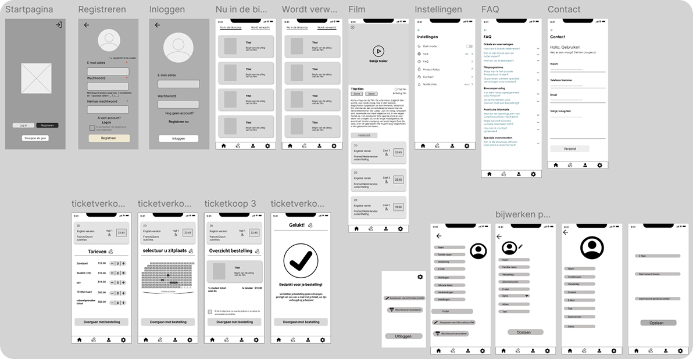

Lumière cinema Mechelen
Voor dit schoolproject ontwierp ik een mobiele app voor Lumière Cinema in Mechelen. De opdracht bestond uit het analyseren van de bestaande website aan de hand van de 21 UX Laws en het ontwerpen van een vernieuwde app-ervaring.
De benchmark en wireframes maakten we eerst in groep. Daarna werkte ik individueel de high-fidelity designs uit in Figma, met behoud van de bestaande visuele identiteit van Lumière.
- Projectnaam:
- Lumière Cinema Mechelen
- Type:
- schoolproject, groeps- en individueel project
- Duur:
- februari - juni 2025
- Tools:
- Figma
- Focusgebieden:
- UX Laws, app design, interaction design, variables, dark mode

De opdracht
We analyseerden de bestaande Lumière-website aan de hand van de 21 UX Laws en maakten vervolgens in groep mobile-first wireframes. Daarna werkte elk groepslid individueel een high-fidelity appdesign uit.
De app moest twee ervaringen bevatten: één voor een nieuwe gebruiker en één voor iemand die de app al minstens een jaar gebruikt. Vereiste functies waren onder meer zoeken, favorieten, gekochte tickets, meldingen, contact en verschillende feedback-pop-ups.
Daarnaast werkte ik met Figma variables, onder andere voor profielfoto’s, ticketselectie en een instelbare dark mode.
Tijdlijn van het project
-
Research en benchmark
Bestaande website
-
User stories en
flowchart
- Wireframes
- User testing
-
Functionaliteiten en
variabelen
- Eindresultaat
Benchmark bestaande website
Onze groep benchmarkte de bestaande Lumière-website aan de hand van de 21 UX Laws, waaronder de Wet van Fitts, de Wet van Hick en het principe van nabijheid.
De site had een sterke visuele identiteit en een duidelijke focus op filmbeleving, maar sommige interacties waren minder intuïtief.
Ook was bepaalde informatie moeilijk vindbaar en kon de ticketflow eenvoudiger. Deze inzichten vormden de basis voor onze wireframes.
Van groepswireframes naar individueel design
Na de benchmark maakten we als groep wireframes voor onder meer de startpagina, registratie, login, films, instellingen, FAQ, contact, accountbeheer en de ticketflow. Ik werkte de schermen ‘Nu in de bioscoop’ en ‘Wordt verwacht’ uit.

Daarna vertaalde ik de gezamenlijke structuur individueel naar high-fidelity designs. Ik verfijnde de visuele hiërarchie, interacties en micro-interactions voor zowel nieuwe als ervaren gebruikers.
Functionaliteiten en interacties
De app bevat een favorietenlijst, een zoekfunctie met directe resultaten, een overzicht van gekochte tickets en een meldingenpagina. Zo kunnen gebruikers films bewaren, terugvinden en hun reserveringen snel raadplegen.
Ik ontwierp ook feedback-pop-ups voor geen internetverbinding, een succesvol verzonden contactformulier en het verlaten van de ticketflow. Deze meldingen geven de gebruiker duidelijkheid en helpen onbedoelde acties voorkomen.
Werken met variables
Variables waren een belangrijk onderdeel van de opdracht. In accountbeheer kunnen gebruikers via een variabele hun profielfoto wijzigen en meteen het resultaat zien.
Bij de ticketselectie koppelde ik plus- en minknoppen aan het aantal tickets en de totaalprijs. Zo past de prijs zich onmiddellijk aan wanneer een gebruiker tickets toevoegt of verwijdert.
Resultaat
Het eindresultaat is een interactieve mobiele app voor Lumière Cinema, met een consistente visuele identiteit, duidelijke navigatie en aandacht voor micro-interactions. De app bevat alle gevraagde functionaliteiten, van film zoeken en favorieten bewaren tot tickets beheren en instellingen aanpassen.
Ik ontwierp twee gebruikerservaringen: een ervaren gebruiker krijgt snel toegang tot persoonlijke content, terwijl een nieuwe gebruiker duidelijke begeleiding krijgt. Voor die nieuwe gebruiker maakte ik empty states voor meldingen, favorieten en gekochte tickets, met geanimeerde iconen die uitnodigen om de functies te ontdekken.